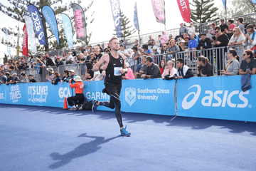
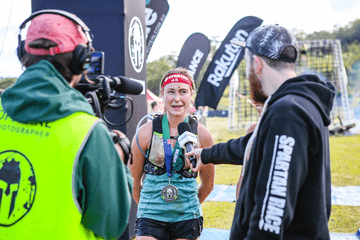

Aduletics is a run club and a runner's school all in one. It's much more than just 'going for a run'. Our focus is about teaching runners how to run, and to equip our runners with the tools they need to train both the brain AND the body.
We're all about building stronger AND smarter runners, so there is just as much an emphasis on running technique, skill development, injury prevention and education as there is on the actual programming.
Run with us
Running development
All of our weekly structured running sessions (including intervals, hills, tempo & aerobic training) are accompanied by running drills to work on technique development, both to improve running efficiency & reduce risk of injury. We place a large emphasis on explaining the ‘why’s’ of our training, the purpose of each type of session, what each drill is working to improve and educating our runners.
Strength training
Every week our program includes 2 x strength training sessions, designed specifically for runners. Strength training is SO important not only for improving performance but also to help prevent running injuries, and is an essential part of all our runners’ training.
Education
Our philosophy at Adultletics is to equip our runners with the tools they need to improve not only from a performance perspective, but to learn how to listen to our bodies, optimise running form, recover better, and ultimately become more informed, happier and healthier runners. We do this by explaining the purpose of every session and technique drill, holding weekly educational webinars with a different focus every week, a daily challenge that changes weekly with either a physical or mentor focus, and answering all questions that our members have in regards to any aspect of their training.
Social connection
Adultletics believes running is better done with others. It’s more fun, more sustainable, and you are more likely to achieve your goals, whatever they may be. For this reason we have built our club into an online running community - this is where not only the program for the week is shared as well as our educational content, but members’ questions are answered, members share their progress, accomplishments & struggles, as well as how they felt during certain sessions, and general banter!
Run With Us
What’s included:
x3 structured running sessions per week (a speedplay session, an aerobic session and a 'mystery' session)
x2 online strength training for runners sessions per week
x1 weekly team Q&A, check-in and workshop about a different running-related topic (such as choosing the right shoes, running technique, nutrition for runners, goal setting etc.)
A daily challenge, that changes weekly (this may be a physical or mental challenge)
Weekly drills to work on running technique and skill development
Connection to a like minded group of people for further support, laughs, motivation & inspiration
First week is free, then membership is a flat $23AUD/per week. There are NO sign-up fees and NO lock-in contracts.
Pay as you go and cancel anytime, no charge if you cancel in the first week.
Adultletics provides variations of every component of the weekly program to cater for the absolute newbie to the well-trained and experienced runner. We offer programs based on the event you are training for, from 5km to ultra marathon distances.
I currently have an injury and am not allowed to run, can I still join?
Absolutely! Depending on the injury, there is almost certainly still training that you CAN do. Please contact us to discuss your specific injury so we can tailor the structured running and strength sessions for you with appropriate alternatives. For all other components, you will be able to participate in the same way as all other members. We want to ensure that when you are recovered from injury, you can hit the ground running!
How will I keep up to date with the weekly training schedule, educational content and connected to other Adultletics members?
All content will be provided through our private Facebook group.
This Facebook group will also be where all participants can connect, share stories, motivation and banter.
The coaches are always available for Adultletics members on email, facebook messenger or phone to be contacted at any time.
Can I trial to see if Adultletics is right for me?
Please do! The first week of our membership is free, so you can try it out before spending a dollar. Simply sign up above and let us know if you no longer want to continue before the trial is up.
OK I'm in. How much and when?
Sign up today via the link above to get started!
First week is free, then membership is a flat $23AUD/per week. There are NO sign-up fees and NO lock-in contracts.
Pay as you go and cancel anytime, no charge if you cancel in the first week.
Mike Hobbs is the creator of the Embodied Runner program, the medical director of an international marathon team comprising over 100 athletes, and is a sports and rehabilitation chiropractor. He works extensively with runners and consults online for runners all around the world. He is currently training for a sub 3-hour road marathon, his master Kettlebell certification and his first ultra marathon later in 2020.


About Kate Hobbs:
Kate is a certified running coach, bringing her own extensive first-hand experience to her athletes. She has raced competitively at a national level for over a decade, running track, trail and mountains. With a recent transition to obstacle course racing, she is already making a name for herself as one of Australia’s top female elite athletes, with multiple podium finishes and representing Australia at the World Championships.